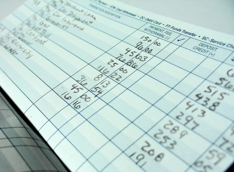

What is Blockchain?
Blockchain is a distributed ledger technology. That said, let’s first review what is a “ledger”. In accounting, a ledger is an on-going list of bookkeeping records. A written ledger is maintained using a bound book with transactions recorded as a line on the page. This is very similar to the small “check register” booklets that would come with a new box of personal checks. Before online banking, checking account owners would record the check number, recipient, and amount when writing a check.

Similarly, a Blockchain records transactions, or any other information, in a “block” of information which you can think of as a page in a ledger. Using sophisticated hashing techniques, each block is given a unique “fingerprint” created from all the information inside the block. We call this a block’s “hash”. Each new block contains the hash of the previous block which creates the “chain” effect of Blockchain. Once a block is published, any manipulation or modification of the data in an existing block would change the block’s hashed signature such that others would be aware of the tampering. Not only would changing data in a block change the hash of that individual block but all subsequent blocks thus making it extremely difficult to manipulate published data on a Blockchain.
The term “distributed ledger” is used because Blockchains consist of a community that includes multiple, perhaps tens of thousands, nodes and each node maintains a copy of the ledger. Consensus algorithms are used to ensure agreement amongst the nodes about the validity of new blocks and the information contained in the Blockchain. Because each node maintains a redundant version of the Blockchain, the data in the blocks remains accessible even if one, or several, nodes are compromised due to malicious activity or other connectivity issues.
What problems does Blockchain solve?
In 2009, Blockchain was first introduced in a paper submitted to a cryptography mailing list using the pseudonym Satoshi Nakamoto. The paper’s title was “Bitcoin: A Peer-to-Peer Electronic Cash System” and it provided the blueprint for a unique structure that makes Blockchain extremely secure, resilient to data modification, and allows unparalleled levels of transparency.
The original problem Blockchain solved was the inability to send payments from one party to another without going through a intermediary. Before Blockchain, institutions, such as banks, provided the “trust” necessary for two parties to conduct a financial transaction. Through Blockchain, anyone can view a copy of the ledger, making all transactions transparent, and there is no central authority.
What are some of the advantages and limitations of using Blockchain?
Some of the advantages of Blockchain include: enhanced security, decentralization of information, immutability, and transparency. As mentioned previously, Blockchain is a distributed ledger and each block can contain almost any type of information, financial or otherwise. Information contained in a Blockchain is immutable. This means that recorded data cannot be changed. Any change to the contents of a block would change the hash signature of that block thus changing the hash of all of the following blocks. This is an advantage over other data storage solutions especially when immutability is desired.
Some of the limitations of Blockchain include: maturity as a solution, energy consumption, inefficiency and immutability. Yes, immutability is a strength and a limitation. It is a limitation because many situations do not require the concept of immutability. If the wrong information was entered into a food ordering system, it should be completely acceptable to make a correction by modifying the incorrect order instead of creating another order to negate the incorrect order. Some of the more popular Blockchains that utilize “Proof of Work” to create new blocks, utilize large amounts of energy to solve a complex hashing puzzle that completes a new block. Blockchain is inefficient by design since there are multiple redundant copies of the same information on each node. Lastly, Blockchain is still a relatively new technology and lacks the adoption and decades of proven performance of databases. For many applications, a centralized database will be the ideal solution and Blockchain would not be an optimum choice.
How does Blockchain work?
A Blockchain user initiates a transaction and cryptographically “approves” the transaction. The transaction is broadcast to other nodes in the network and the transaction is validated by the nodes. After validation, the transaction is added to the next block of the Blockchain. The new block is connected to the last block in the Blockchain by including the last block’s hash as part of the new block. Through preset logic, Blockchain nodes come to a consensus agreement on the validity of the new block and it is added to the distributed ledger.
Conclusion
In conclusion, Blockchain is a spectacular new addition in the toolbelt of solution architects. We are sitting at the seam of a new iteration of Internet technologies. Web3 will push forward the concepts of transparency, decentralization, and individual control of personal data. Blockchain will play a foundational role in the Web3 evolution. Given its current limitations, Blockchain might not be the best solution in certain situations but when it is, Blockchain is the absolute best solution.